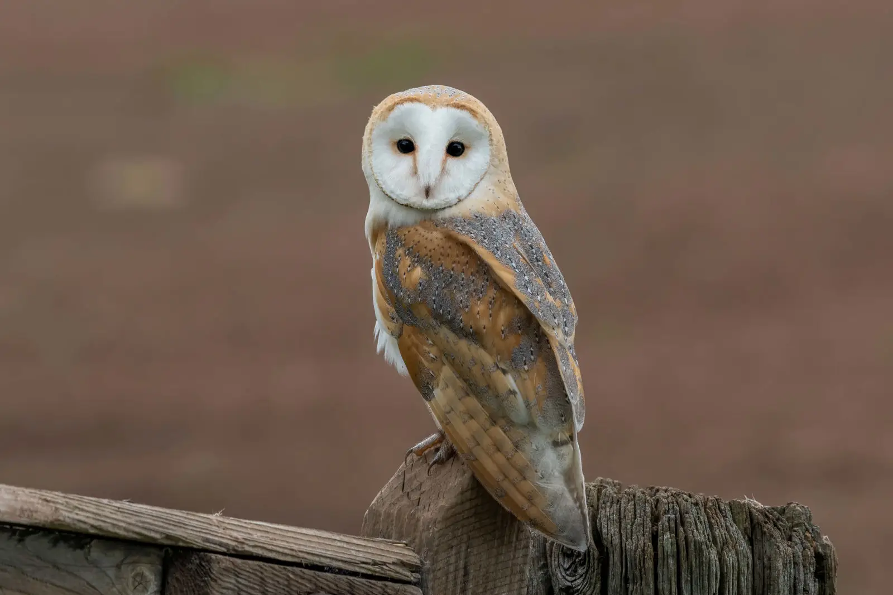

Why Owls?
 Owls have almost always been my favorite bird in Class Aves. The ones I have seen in person were at a presentation at a state park and at zoos. I am partial to barn owls, an example of which is shown in the picture! Owls are nocturnal, are near silent while flying, and have excellent eyesight, giving them a high advantage over their prey.
This image uses a file type of WebP. WebP was developed by Google and can provide crisp images while usually being small in file size. It supports millions of colors and has an improved compression over JPG images. I chose this image because it shows a close up and rich view of a barn owl, known for their heart shaped face discs and freckled feather pattern.
This image is from animalia.bio.